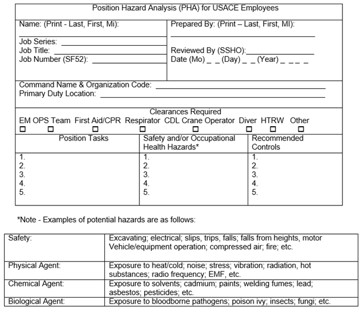
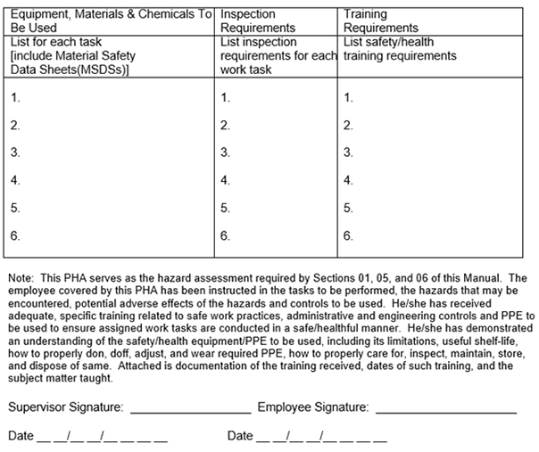

01.A General
01.A.01–01.A.12
01.A General. This Section provides the overall programmatic guidance for developing, managing and implementing a safety and occupational health (SOH) program.
01.A.01 No person shall be required, instructed or allowed to work in surroundings or under conditions that are unsafe or dangerous to his or her health.
01.A.02 The employer is responsible for initiating and maintaining a SOH program that complies with the US Army Corps of Engineers (USACE) SOH requirements.
▸ Note 1: Supplementation of this manual is not authorized except as published by the HQUSACE SOH Office.
▸ Note 2: Local USACE Commands may develop Standard Operating Procedures (SOPs) to implement the provisions contained within this manual, but may not implement new requirements (e.g., more stringent, differing in intent, etc.), without the specific approval of HQUSACE-SO.
01.A.03 Each employee is responsible for complying with applicable SOH requirements, wearing prescribed SOH equipment, reporting unsafe conditions or activities, preventing avoidable mishaps, and working in a safe manner.
01.A.04 Supervisors shall remove employees from exposure to work hazards, or the work site when they are observed acting in an unsafe manner, or otherwise pose a potential SOH threat to themselves or others. Employees may return to the work environment after appropriate supervisory action has occurred (i.e., re-training on proper safe procedures, etc.).
01.A.05 SOH programs, documents, signs, and tags shall be communicated to employees in a language that they understand.
01.A.06 Worksites with non-English speaking workers shall have a person(s), fluent in the language(s) spoken as well as English, on-site when work or training is being performed, to interpret and translate as needed.
01.A.07 SOH Bulletin Board. The Contractor or USACE Project shall erect and maintain a SOH bulletin board in a commonly accessed area in clear view of the on-site workers. The bulletin board shall be continually maintained and updated and placed in a location that is protected against the elements and unauthorized removal. It shall contain, at minimum, the following SOH information:
- A map denoting the route to the nearest emergency care facility;
- Emergency phone numbers;
- A copy of the most current Accident Prevention Plan (APP) or Project Safety and Occupational Health (SOH) Plan, mounted on/adjacent to the bulletin board, or a notice on the bulletin board stating the location of the Plan. The location of the Plan shall be accessible on the site by all workers;
- The Occupational Safety and Health Administration (OSHA) Form 300A, Summary of Work Related Injuries and Illnesses, posted in accordance with OSHA requirements (from February 1 to April 30 of the year following the issuance of this form). It shall be mounted on/adjacent to the bulletin board, accessible on the site by all workers;
- A copy of the SOH deficiency tracking log mounted on/adjacent to the bulletin board or a notice on the bulletin board shall state the location where it may be accessed by all workers upon request; > See 01.A.13.d.
- SOH promotional posters;
- Date of last lost workday injury and date of last OSHA recordable injury;
- OSHA Safety and Health Poster;
- A copy of the hazardous material inventory, identification of use, approximate quantities and site map detailing location as required by Section 06.B.01.a.
01.A.08 USACE Business Process. USACE Project Managers (PMs), in accordance with the SOH Reference Document (Ref Doc 8016G) contained in the USACE Business Manual, shall ensure that a SOH plan is developed for funded projects and incorporated into each Project Management Plan (PMP)/Program Management Plan (PrgMP).
- The PM shall collaborate with the customer and the local SOH office (SOHO) on project safety goals and objectives and communicate these through the PMP/PrgMP SOH plan and Project Delivery Team (PDT) meetings.
- Coordination between local SOHOs of the design district and the construction district shall occur during the development of the PMP.
01.A.09 USACE Project Management Plan. USACE PMs and the PDT shall develop the SOH program requirements to be incorporated in the PMP and are responsible for assuring that SOH requirements are properly addressed and executed throughout the life cycle of each project.
- The PM shall ensure that identified hazards, control mechanisms, and risk acceptance are formally communicated to all project stakeholders.
- The current Unified Facilities Guide Specification (UFGS) for Safety and Health in effect on the date of solicitation shall be used in all USACE contract work administered on behalf of the USACE under the provisions of FAR Clause 52.236-13 and on other contracts as deemed appropriate based on the risk assessment.
- Military Construction (MILCON) Transformation contracts will include the Federal Acquisition Regulation (FAR) Clause 52.236-13 as well as the Model Request for Proposal (RFP).
- Locally developed SOH requirements will not be included in contract requirements without the concurrence of the Contracting Officer (KO) and local SOHO.
- When an employee is deemed to be in imminent danger, the COR or a designated representative shall immediately stop the unsafe work being performed. > See Federal Acquisition Regulation (FAR) Clause 52.236-13(d).
01.A.10 USACE Project SOH Plan. For USACE activities where USACE employees are engaged in functions other than routine office or administrative duties, a Project SOH Plan shall be developed, implemented, and updated as necessary.
- Such activities include operations and maintenance; recreational resource management; in-house conducted environmental restoration (investigation, design, and remediation); surveying, inspection, and testing; construction management; warehousing; transportation; research and development; and other activities when the Government Designated Authority (GDA) and the command’s local SOHO agree on the benefit of such a program for accident prevention.
- The Project SOH Plan shall address applicable items listed in Appendix A, and in addition, any local SOPs or requirements identified in the USACE Command's SOH Program. > See Section 01.A.02, Notes 1 and 2.
- For Hazardous Waste Operations and Emergency Response (HAZWOPER) sites, refer to Section 33 for Site Safety and Health Plan (SSHP) guidance.
01.A.11 Position Hazard Analyses (PHA) for USACE Employees. A PHA shall be prepared, updated as necessary, documented by the supervisor, and reviewed by the command’s SOHO for each USACE position according to the hazards associated with the position's tasks. A generic PHA may be used for groups of employees performing repetitive office/administrative tasks where the primary hazards result from ergonomic challenges, lighting conditions, light lifting and carrying tasks, and indoor air quality. > See Figure 1-1 for an outline of a PHA. An electronic, fillable version of a PHA may be found on the HQUSACE Safety Office Website.
- The USACE Supervisor, in coordination with the SOHO, shall determine the need for analysis of each position within his or her area of responsibility.
- In developing the analysis for a particular position, supervisors shall draw upon the knowledge and experience of employees in that position in addition to that of the SOHO.
- A complete PHA document shall indicate that the hazards, medical surveillance requirements, control mechanisms, personal protective equipment (PPE) and training required for the position were discussed with the employee. The PHA shall be signed by the supervisor and employee. A PHA shall contain a copy of the employee’s training certificate of completion for all required training.
- Supervisors shall review the PHAs with employees upon initial assignment to a position, whenever there is a significant change in hazards and during their annual performance review or at least annually.
01.A.12 Accident Prevention Plans (APP) for Contract Work. Before initiation of work at the job site, an APP shall be reviewed and found acceptable by the GDA. > See Appendix A.
- APPs shall be developed and submitted by the Contractor. The Contractor shall address each of the elements/sub-elements in the outline contained in Appendix A in the order that they are provided in the manual. If an item is not applicable because of the nature of the work to be performed, the Contractor shall state this exception and provide a justification.
- The Contractor shall identify each major phase of work that will be performed on this contract. Within each major phase, all activities, tasks or Definable Features of Work (DFOWs) shall be identified that will require an Activity Hazard Analysis (AHA). > See Section 01.A.14 and Appendix A, paragraph 3.j.
- The APP shall also address any unusual or unique aspects of the project or activity.
FIGURE 1-1
POSITION HAZARD ANALYSIS (PHA)

FIGURE 1-1 (Cont'd)
POSITION HAZARD ANALYSIS (PHA)

- The APP shall be written in English by the Prime Contractor and shall articulate the specific work, work processes, equipment to be used, and hazards pertaining to the contract. The APP shall also implement in detail the pertinent requirements of this manual.
- The APP shall contain appropriate hazard-specific plans as needed for the work being performed (e.g., appendices that include a SSHP for hazardous waste site cleanup operations; a Lead Compliance Plan when working with lead, or an Asbestos Hazard Abatement Plan when working with asbestos).
- All highly complex or high-hazard projects shall be coordinated with the local SOH office.
- For limited-scope supply, service and R&D contracts, the KO and local SOHO may authorize an abbreviated APP. > See Appendix A, Paragraph 2 for details.
- The APP shall be developed and signed by Qualified Person (QP) and then signed. The Contractor shall be responsible for documenting the QPs’ credentials.
- The Contractor's APP shall be job-specific and must include work to be performed by subcontractors.
- If at the time of submission of the APP, portions of the work have yet to be known or sub-contracted, that portion will be added to the APP, submitted and accepted by the GDA prior to initiation of the sub-contracted work.
- In addition, the APP shall include measures to be taken by the Contractor to control hazards associated with materials, services, or equipment provided by suppliers.
- Each sub-contractor shall be provided a copy of the APP by the prime contractor and be required to comply with it.
- The contractor shall provide on-going evaluations of the APP throughout the life of the project. Changes, revisions and updates to the APP shall be reviewed and accepted by the GDA.
▸Note: When USACE or other government employees are on a site that is controlled by a contractor and are affected by the contractor-managed APP (e.g., QA's on construction sites, etc.), they shall comply with the contractor's APP and associated programs (i.e., Fall Protection, Hazardous Energy Control, Diving, Blasting, etc.).
{kind=link}
{kind=link}